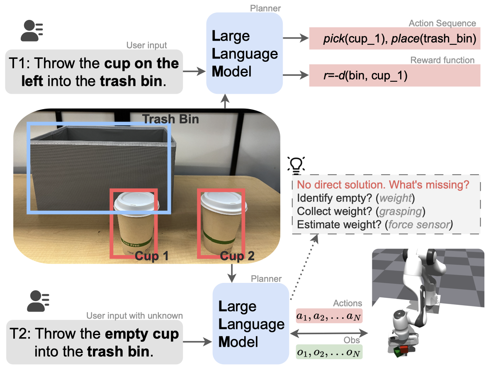
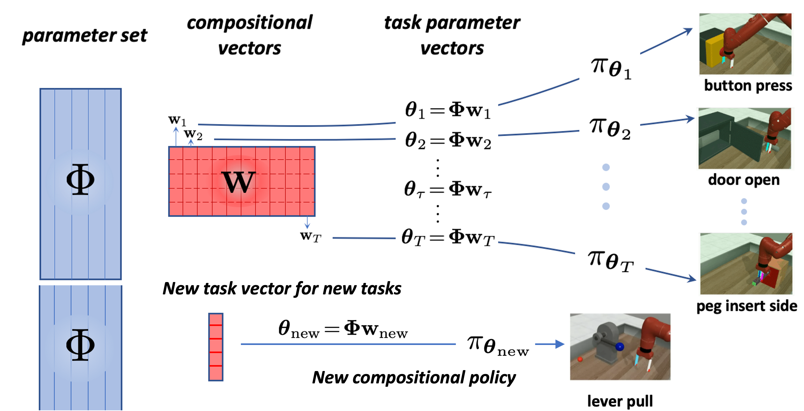

|  | LLM-POP: Large Language Model for Partially Observable Task Planning |
 |
PaCo: Parameter-Compositional Multi-Task Reinforcement Learning |
|  | Efficient Multi-Task and Transfer Reinforcement Learning with Parameter-Compositional Framework |
 |
Multi-level Reasoning for Robotic Assembly: From Sequence Inference to Contact Selection |
 |
Efficient Sim-to-real Transfer of Contact-Rich Manipulation Skills with Online Admittance Residual Learning |